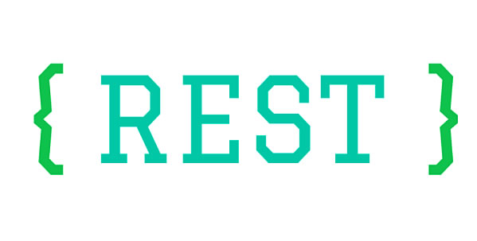
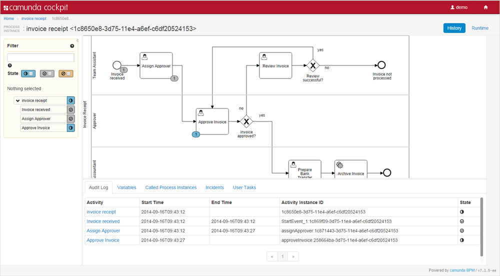
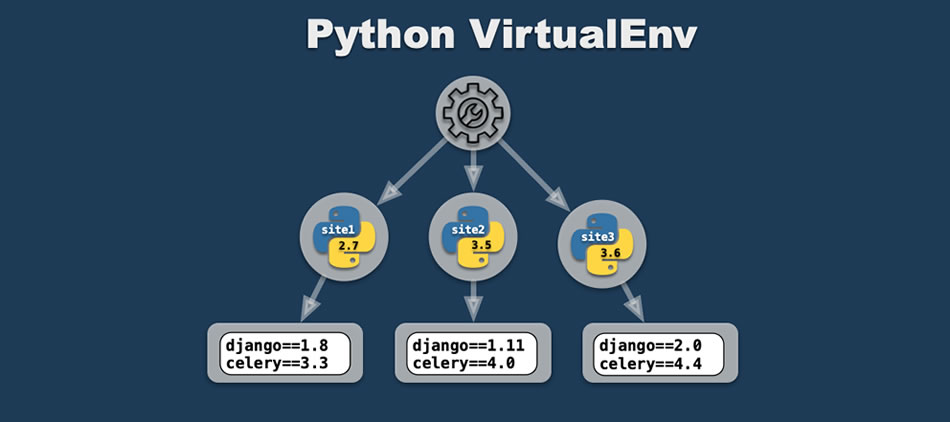
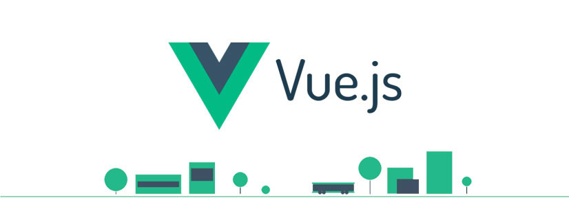
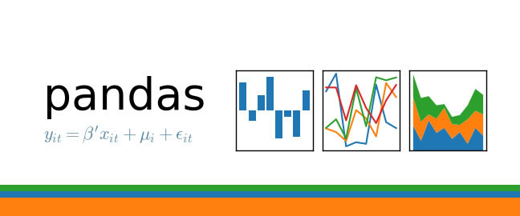
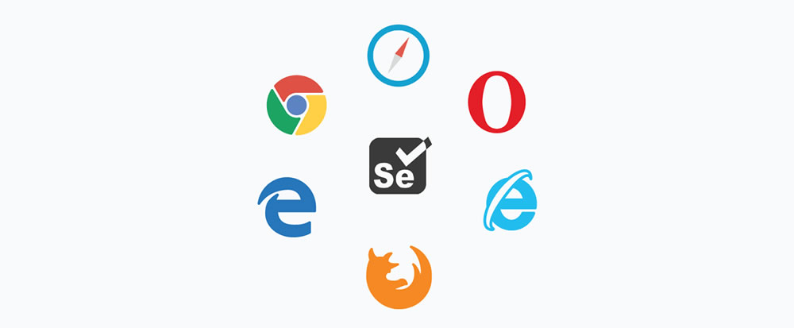
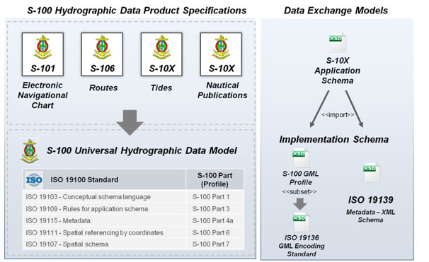

The HTML language is a recognized standard around the world and whose standards define a non-profit organization known as W3C. The designers use this language to create their web pages.
CSS3
CSS is the best way to separate content and its presentation and is essential to create complex web pages.
JavaScript
JavaScript is a programming language that is used mainly to create dynamic web pages.JavaScript is a programming language that is used mainly to create dynamic web pages.
React
A JavaScript library for building user interfaces. React makes it painless to create interactive UIs.
Node.js
Conceived as a JavaScript execution environment oriented to asynchronous events, Node is designed to build scalable network applications.
Ruby on Rails
Learning to build a modern web application is daunting. Ruby on Rails makes it much easier and more fun.
Python
Python is an interpreted programming language whose philosophy emphasizes a syntax that favors a readable code.
Amazon Web Services
Amazon Web Services offers reliable, scalable, and inexpensive cloud computing services. Free to join, pay only for what you use.
Drupal
Because we all have different needs, Drupal allows you to create a unique space in a world of cookie-cutter solutions.
Hacer la estructura de la base de datos, escoger los colores dela aplicación y crear las pantallas de inicio de sesión, registro de usuarios y perfil de usuario.
Sprint 2
May 3, 2019
Crear un prototipo de CRUD de entidades, unificar todas las pantallas para que tengan los mismos estilos, actualizar la página web del grupo, averiguar sobre AWS para subir la aplicación en la nube y crear los métodos GET para unificar Back y Front.
Sprint 3
May 8, 2019
Crear pantallas de información familiar, información académica, cargar archivos y el home de perfil de usuario. Actualizar el motor de procesos y crear método POST para unir Back y Front.
Sprint 4
May 15, 2019
Hacer el header y el footer de página, reestructuración de la base de datos, modificar el modelo de entidad relaciones y actualizar el motor de procesos.
Sprint 5
May 22, 2019
Hacer manejo de rutas en Front, validar modelos, paginar usuarios usando la gema willpaginate en Back, implementar la gema knock en Front y terminar pantalla de educación superior.
Sprint 6
May 29, 2019
Adecuar el seed, realizar la autenticación y actualizar el motor de procesos. Se asignan pocas tareas por semana de parciales.
Sprint 7
June 5, 2019
Realizar la autenticación con Redux, mantener la sesión, hacer las peticiones de perfil de usuario y hacer funcionar la aplicación.
Sprint 8
June 12, 2019
Hacer pantallas de Administrador, unir la pantalla de subida de archivos con Back y hacer una barra de progreso para el usuario. Implementar Camunda para el motor de procesos e iniciar documentación sobre seguridad de la aplicación.
Retrospective
Of the Project
Final delivery!
Our Development Team
Members of the Scrum Team, XDev group.
Luis Gerson Avendano
Frontend Developer/Architect
Andres Duvan Chaves
Backend Developer/Architect Leader
Miguel Angel Gomez
Chief Information Security/Testing
Michael Estiven Guerrero
Frontend Developer
Christian Fernando Ortiz
Frontend Developer
Juan Sebastian Paez
Backend Developer
Cesar Felipe Pineda
Fullstack Developer
David Felipe Rico
Fullstack Developer
Sergio Ivan Sarmiento
Backend Developer/Architect/Testing
We have the best development team, trained to solve all your concerns and solve your needs. We not only detect what you want, we also make it real. We Build Technology.
CMMI
Se aprende sobre qué es CMMI, para que sirve y sus niveles de madurez.
CMMI (Capability Maturity Model Integration) es un modelo de mejora del rendimiento de clase mundial para organizaciones competitivas que desean lograr operaciones de alto rendimiento. El propósito de CMMI es el de mejorar los procesos que se realicen en una compañía; adicional a ellos proporciona una guía para el proceso de mejora de la organización, así como su habilidad para manejar el desarrollo, adquisición y mantenimiento de productos o servicios. CMMI establece cinco niveles de ‘madurez’ de las organizaciones en función de si tienen o no una serie de características específicas.
Date: February 2019
Speaker: Alejandro Troncoso
Category: Introduction to the course
Arquitectura Empresarial
Se aprende sobre qué es una Arquitectura Empresarial, cómo se desarrolla, componentes y metodologías.
Una de las disciplinas de la informática que mayor peso ha cobrado en los últimos años es la Arquitectura Empresarial (AE, en inglés 'Enterprise Architecture'), que puede explicarse en función de las metas de una organización y en cómo desde los sistemas se pueden proponer formas de organizar sus procesos para optimizar los recursos y lograr así los objetivos propuestos. Considerando que el núcleo del logro de la AE está en su capacidad de alineación entre todos los sistemas y procesos de la organización, es apenas lógico pensar que existen metodologías estándar diseñadas con el propósito de desarrollar la Arquitectura y permitir, entre otras, que los desarrolladores puedan generar propuestas que se integren con facilidad a la misma. Existen cuatro metodologías o marcos de trabajo (frameworks) de alto reconocimiento para desarrollar la AE: Marco de trabajo de Zachman, Marco federal de Arquitectura Empresarial, Método Gartner y TOGAF.
Date: March 2019
Speaker: Alejandro Troncoso
Category: Development Methodologies
Metodología SCRUM
Se aprende sobre la metodología SCRUM, los roles, las reuniones y conceptos claves.
La metodología SCRUM, es una metodología ágil y flexible utilizada para la gestión de proyectos. Scrum descompone la organización en pequeños equipos auto-organizados. Cada equipo desarrolla los proyectos en base a entregas parciales (sprints), con el objetivo de alinear expectativas con el cliente y aumentar el valor que se ofrece a los mismos. El equipo de trabajo auto organizado tiene una reunión diariamente "Daily Scrum" durante unos 15 minutos, en esta reunión cada uno expone que hizo, que va a hacer y que problemas se ha encontrado y se debate entre todos como realizar las tareas. Cuando termina un sprint se realiza una reunión o "Sprint Review" donde se presenta el producto resultante del "Sprint Backlog", también puede realizarse una reunión retrospectiva "Sprint Retrospective» de hasta 3 horas", en la que se evalúan las técnicas y habilidades empleadas para valorar si pueden mejorarse y aplicarse para los siguientes Sprint. En Scrum existen 3 roles: Product Owner, Scrum Master y Equipo de desarrollo.
Date: March 2019
Speaker: Alejandro Troncoso
Category: Agile Methodologies
Nube Amazon (AWS)
Se aprende sobre qué es la nube se Amazon, sus servicios, qué es SSH, cómo crear una máquina virtual en AWS y cómo conectarse a la instancia de EC2 que se creó en AWS por medio de PuTTY y una llave.
Amazon Web Services (AWS abreviado) es una colección de servicios de computación en la nube pública (también llamados servicios web) que en conjunto forman una plataforma de computación en la nube, ofrecidas a través de Internet por Amazon.com. La tecnología AWS se implementa en granjas de servidores en todo el mundo y es mantenida por la subsidiaria de Amazon. Las tarifas se basan en una combinación de uso, las características de hardware / SO / software / redes elegidas por el suscriptor, la disponibilidad requerida , la redundancia , la seguridad y las opciones de servicio. Los suscriptores pueden pagar por una sola computadora virtual de AWS, una computadora física dedicada o clusters de cualquiera de los dos. Amazon ofrece AWS a los suscriptores como una forma de obtener capacidad de cómputo a gran escala de forma más rápida y económica que la construcción de una granja de servidores físicos reales.
Date: March 2019
Speaker: Alejandro Troncoso
Category: Amazon Web Services
Git
Se aprende sobre qué es Git, cómo se instala en Linux, comandos básicos y la diferencia entre Git y GitHub.
Git es un software de control de versiones diseñado por Linus Torvalds, pensando en la eficiencia y la confiabilidad del mantenimiento de versiones de aplicaciones cuando éstas tienen un gran número de archivos de código fuente. Su propósito es llevar registro de los cambios en archivos de computadora y coordinar el trabajo que varias personas realizan sobre archivos compartidos. Cada desarrollador o equipo de desarrollo puede hacer uso de Git de la forma que le parezca más conveniente. Sin embargo una buena práctica es la siguiente, utilizando 4 tipos de ramas: Master, Development, Features, y Hotfix.
Date: March 2019
Speaker: Alejandro Troncoso
Category: Amazon Web Services
Motor de Procesos
Se aprende sobre qué es un BPM, para que sirven y cómo se usan.
Business Process Management se refiere a la forma en que una empresa maneja sus operaciones diarias. BPM es un término autodescriptivo, ya que se trata de administrar sus procesos comerciales de manera eficiente. Es un término colectivo que denota el uso de sus recursos disponibles, incluidos sus empleados, periféricos y tareas para obtener el máximo resultado. BPM se trata principalmente de manejar eficientemente los procesos repetitivos para que consuman menos tiempo y recursos humanos. La gestión de procesos de negocio o BPM generalmente se divide en tres tipos principales: BPM para Documentos, BPM para la fuerza laboral y BPM para la integración. Business Process Management, por razones obvias, se considera el santo grial del éxito de una organización porque ha ayudado a millones de empresas en todo el mundo a lograr sus objetivos de una manera racional. El concepto es muy simple: cuando hay múltiples tareas y varias personas participan en su ejecución, a menudo conduce a una situación caótica a menos que exista una metodología específica. La forma más simple de administración de procesos de negocios es configurar una jerarquía para un proceso cuando la información de un cliente se recopila de una persona, un administrador la ingresa en el sistema y el gerente la revisa. Más tarde, los vendedores pueden utilizarlo para realizar llamadas o completar un trato comercial. Funciona de manera diferente según las necesidades del negocio.
Date: March 2019
Speaker: Alejandro Troncoso
Category: Software Architecture
Crear Base de Datos
Se aprende sobre cómo instalar Apache en la máquina virtual de AWS y cómo crear una base de datos de Oracle en AWS.
Cientos de miles de clientes han adoptado los servicios de base de datos desarrollados para la nube de AWS debido a que ofrecen un rendimiento y una escalabilidad superiores, resultan más fáciles de administrar y son más rentables y fiables que los productos de base de datos de la "vieja guardia". La cartera de bases de datos personalizadas de AWS admite distintos modelos de datos y le permite desarrollar aplicaciones distribuidas, altamente escalables y basadas en casos de uso. Con las bases de datos de AWS, se puede comenzar con pocos recursos e ir aumentándolos a medida que crece la aplicación. Las bases de datos de AWS están diseñadas para soportar cargas de trabajo empresariales de importancia crítica y ofrecen una alta fiabilidad y disponibilidad.
Date: April 2019
Speaker: Alejandro Troncoso
Category: Amazon Web Services
REST
Se aprende sobre qué es REST, sus características o limitantes y los métodos en los que se apoya para manipular recursos.

La transferencia de estado representacional (en inglés Representational State Transfer) o REST es un estilo de arquitectura software para sistemas hipermedia distribuidos como la World Wide Web. El término se originó en el año 2000, en una tesis doctoral sobre la web escrita por Roy Fielding, uno de los principales autores de la especificación del protocolo HTTP y ha pasado a ser ampliamente utilizado por la comunidad de desarrollo. REST es cualquier interfaz entre sistemas que use HTTP para obtener datos o generar operaciones sobre esos datos en todos los formatos posibles, como XML y JSON, es una Arquitectura para comunicarnos con el servidor desde el cliente. Se apoya en el protocolo HTTP y sus métodos básicos de petición para manipular los recursos: GET, POST, PUT, DELETE, etc. Características que debe tener todas las API basadas en la arquitectura REST: Arquitectura Cliente/Servidor, Stateles, Cacheability, Sistema basado en capas, Uniform Interface y Código on Demand (opcional).
Date: April 2019
Speaker: Alejandro Troncoso
Category: Software Architecture
Crecimiento Vertical y Horizontal
Se aprende sobre la escalabilidad (crecimiento) vertical y horizontal, y sus diferencias.
La escalabilidad vertical o hacia arriba, este es el más simple, pues significa crecer el hardware de uno de los nodos, es decir aumentar el hardware por uno más potente, como disco duro, memoria, procesador, etc. pero también puede ser la migración completa del hardware por uno más potente. El esfuerzo de este crecimiento es mínimo, pues no tiene repercusiones en el software, ya que solo será respaldar y migrar los sistemas al nuevo hardware.
El escalamiento horizontal es sin duda el más potente, pero también el más complicado. Este modelo implica tener varios servidores (conocidos como Nodos) trabajando como un todo. Se crea una red de servidores conocida como Cluster, con la finalidad de repartirse el trabajo entre todos nodos del cluster, cuando el performance del cluster se ve afectada con el incremento de usuarios, se añaden nuevos nodos al cluster, de esta forma a medida que es requeridos, más y más nodos son agregados al cluster.
Date: April 2019
Speaker: Alejandro Troncoso
Category: Amazon Web Services
Docker
Se aprende sobre qué es Docker, la diferencia entre una máquina virtual y Docker y cómo implementarlo en la máquina virtual de AWS.
Docker es un proyecto de código abierto que automatiza el despliegue de aplicaciones dentro de contenedores de software, proporcionando una capa adicional de abstracción y automatización de virtualización de aplicaciones en múltiples sistemas operativos. Docker utiliza características de aislamiento de recursos del kernel Linux, tales como cgroups y espacios de nombres (namespaces) para permitir que "contenedores" independientes se ejecuten dentro de una sola instancia de Linux, evitando la sobrecarga de iniciar y mantener máquinas virtuales. Mediante el uso de contenedores, los recursos pueden ser aislados, los servicios restringidos, y se otorga a los procesos la capacidad de tener una visión casi completamente privada del sistema operativo con su propio identificador de espacio de proceso, la estructura del sistema de archivos, y las interfaces de red. Usar Docker para crear y gestionar contenedores puede simplificar la creación de sistemas altamente distribuidos, permitiendo que múltiples aplicaciones, las tareas de los trabajadores y otros procesos funcionen de forma autónoma en una única máquina física o en varias máquinas virtuales. Docker se puede integrar con diferentes herramientas de infraestructura, como Amazon Web Services, Ansible, Cfengine, Chef, Google Cloud Platform, DigitalOcean, IBM Bluemix, Jelastic, Jenkins, Microsoft Azure, OpenStack Nova, OpenSVC, Puppet, Salt, y Vagrant.
Date: May 2019
Speaker: Alejandro Troncoso
Category: Amazon Web Services
Camunda
Se aprende sobre qué es Camunda, cómo implementarlo en nuestro proyecto y cómo usarlo como Motor de Procesos.

Camunda BPM es una plataforma de código abierto de flujo de trabajo y automatización de decisiones . Camunda BPM se entrega con herramientas para crear modelos de flujo de trabajo y decisión , operar modelos implementados en producción y permitir a los usuarios ejecutar las tareas de flujo de trabajo que se les asignan. Se desarrolla en Java y se lanza como software de código abierto bajo los términos de la Licencia Apache. Proporciona un motor de flujo de trabajo compatible con el estándar BPMN y un motor de decisión compatible con el estándar DMN, que puede integrarse en aplicaciones Java y en otros idiomas a través de REST. Camunda BPM es un framework ligero basado en Java. Se puede usar como un servidor de proceso, proceso independiente o incrustado dentro de aplicaciones Java personalizadas. Ofrece a los desarrolladores que no son de Java una API REST y bibliotecas dedicadas para crear aplicaciones que se conectan a un motor de flujo de trabajo remoto. La aplicación de escritorio Camunda Modeler permite a los usuarios crear y editar diagramas de procesos BPMN y tablas de decisiones DMN. Los archivos creados se implementan en los motores Camunda, que utilizan un analizador BPMN para transformar los archivos XML BPMN 2.0 y los archivos XML DMN, en objetos Java, e implementa construcciones BPMN 2.0 con un conjunto de implementaciones de comportamiento BPMN.
Date: May 2019
Speaker: Alejandro Troncoso
Category: Amazon Web Services
Flask
Se aprende sobre qué es Flask, su relación con Python y cómo instalarlos en la máquina virtual de AWS.

Flask es un microframework escrito en Python que permite crear aplicaciones web rápidamente y con un mínimo número de líneas de código. Está basado en la especificación WSGI de Werkzeug y el motor de templates Jinja2 y tiene una licencia BSD. No tiene una capa de abstracción de base de datos, validación de formularios ni ningún otro componente en el que las bibliotecas de terceros preexistentes proporcionen funciones comunes. Sin embargo, Flask admite extensiones que pueden agregar características de la aplicación como si estuvieran implementadas en el mismo Flask. Algunas de sus características son: Envío de solicitud RESTful, Utiliza plantillas de Jinja2, Soporte para cookies seguras, 100% compatible con WSGI 1.0, Basado en Unicode. Facil de instalar, $ pip install Flask.
Date: May 2019
Speaker: Alejandro Troncoso
Category: Amazon Web Services
Vue.js
Se aprende sobre qué es Vue.js, los Frameworks que compiten con él y los primeros pasos de instalación y pruebas.

Vue (pronunciado /vjuː/ en inglés, como view) es un framework progresivo para construir interfaces de usuario. A diferencia de otros frameworks monolíticos, Vue está diseñado desde el inicio para ser adoptado incrementalmente. La biblioteca principal se enfoca solo en la capa de la vista, y es muy simple de utilizar e integrar con otros proyectos o bibliotecas existentes. Por otro lado, Vue también es perfectamente capaz de soportar aplicaciones sofisticadas de una sola página cuando se utiliza en combinación con herramientas modernas y librerías compatibles.
Date: June 2019
Speaker: Alejandro Troncoso
Category: JavaScript Framework
Pandas
Se aprende sobre qué es Pandas, para qué sirve, su instalación y utilidades.

Pandas es una biblioteca de código abierto con licencia BSD que proporciona estructuras de datos de alto rendimiento y fáciles de usar, y herramientas de análisis de datos para el lenguaje de programación Python. Pandas es un proyecto patrocinado por NumFOCUS. Esto ayudará a asegurar el éxito del desarrollo de los pandas como un proyecto de código abierto de clase mundial, y hace posible la donación al proyecto. Python siempre ha sido excelente para la recopilación y preparación de datos, pero no tanto para el análisis y el modelado de datos. pandas lo ayuda a llenar este vacío, permitiéndole llevar a cabo todo su flujo de trabajo de análisis de datos en Python sin tener que cambiar a un idioma más específico del dominio como R. Pandas no implementa una funcionalidad de modelado significativa fuera de la regresión lineal y de panel; Para esto, mira statsmodels y scikit-learn. Todavía se necesita más trabajo para hacer de Python un entorno de modelado estadístico de primera clase, pero estamos bien encaminados hacia ese objetivo.
Date: June 2019
Speaker: Alejandro Troncoso
Category: Python Library
Selenium
Se aprende sobre qué es Selenium, para qué se utiliza y cómo realizar pruebas con Postman.

Es implícito que en cualquier proyecto de desarrollo de software contemos con la implementación de pruebas, automáticas o manuales y cubriendo diferentes propósitos: unitarias, de integración, funcionales, de regresión, de estrés, etc. Su éxito dependerá de su diseño y de la elección adecuada de las herramientas a emplear para su desarrollo. Pero el éxito de las pruebas no será aislado, impactará directamente en la calidad final del producto y formarán parte fundamental en la evolución y mantenimiento de éste. Selenium es un conjunto de utilidades que facilita la labor de obtener juegos de pruebas para aplicaciones web. Para ello nos permite grabar, editar y depurar casos de prueba, que podrán ser ejecutados de forma automática e iterativa posteriormente. Además de ser una herramienta para registrar acciones, permite editarlas manualmente o crearlas desde cero. Las acciones se basan en el uso de diferentes API's en diferentes lenguajes (PHP, Ruby, JAVA, etc).
Date: June 2019
Speaker: Alejandro Troncoso
Category: Amazon Web Services
Data Interchange Languages
Se aprende sobre lenguajes de intercambio estándar.

El Lenguaje de Intercambio Estándar (SIL) es un estándar de lenguaje de intercambio de datos desarrollado por Food Distribution Retails Systems Group (FDRSG) para el intercambio de información entre programas de software. Es un subconjunto de SQL (lenguaje de consulta estructurado) y actúa como un estándar de interfaz para transferir datos entre sistemas de tiendas propietarias como DSD (Direct Store Delivery) y POS (Punto de venta). Fue introducido en 1989 en los Estados Unidos.
Date: July 2019
Speaker: Juan Pablo Salamanca
Category: Guests Engineers
Information Technology in Business
Se aprende sobre el rol de las tecnologías de la información en los negocios.
Las tecnologías de la información son una nueva herramienta presente en las organizaciones, que se suma a otras áreas como las finanzas, la contabilidad, los recursos humanos, la logística y las operaciones; además, comprenderlas, así como su uso, es de suma importancia, ya que son un componente vital en el éxito de los negocios y organizaciones. En específico, los sistemas de información (SI) han venido a cambiar la forma en que operan las organizaciones actuales. A partir de su uso se logran importantes mejoras, como la automatización de los procesos operativos que proporcionan información de apoyo al proceso de toma de decisiones y, lo que es más importante, su implantación facilita el logro de ventajas competitivas. De modo que la aplicación de las tecnologías de información en los negocios constituye un campo de estudio fundamental para la ciencia de la administración y gestión de negocios. En el presente capítulo se proporciona su definición, los tipos y usos de los sistemas de in-formación, las tecnologías de vanguardia en los negocios y la evolución de los sistemas de información; también, para mayor claridad de los conceptos expuestos, se presentan casos de aplicación y las conclusiones pertinentes, además de ejercicios que refuerzan la comprensión del tema.
Date: July 2019
Speaker: Germán Carrillo
Category: Guests Engineers
Soft Skills
Se aprende sobre qué son las habilidades blandas.
Las habilidades blandas, competencias blandas o habilidades suaves, a veces denominadas en español directamente con el término inglés soft skills, son una combinación de habilidades interpersonales, habilidades sociales, habilidades de comunicación, rasgos de la personalidad, actitudes, atributos profesionales, inteligencia social e inteligencia emocional, que facultan a las personas para moverse por su entorno, trabajar bien con otros, realizar un buen desempeño y, complementándose con las habilidades duras, conseguir sus objetivos. Las habilidades blandas son esas competencias, hábitos y comportamientos que distinguen a dos personas (una de las cuales posee estas habilidades y la otra no) que han estudiado lo mismo y obtenido iguales resultados académicos, en el momento de emprender un proyecto, solucionar un conflicto o relacionarse con los demás.